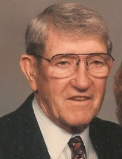

Ann Charlyn Gilbert
K, #60477, f. 7 september 1924, d. 24 august 1993
Familie: Earl Jerome Wahl (f. 10 april 1925, d. 3 september 1972)
| Sønn | Earl Martin Wahl+ |
| Sønn | Lawrence David Wahl+ |
| Datter | Mary Beth Wahl+ |
| Datter | Joanne Wahl+ |
Biografi
Ann Charlyn Gilbert ble født den 7 september 1924 på/i Chicago, Illinois, USA. Hun giftet seg med
Earl Jerome Wahl. Earl Jerome Wahl og hun ble skilt. Hun døde den 24 august 1993 på/i Cook County, Illinois, USA.
Ann Charlyn Gilbert was also known as Ann Charlyn Wahl. Hun was also known as Ann Charlyn Gulbrandsen.
| Sist redigert |
19 april 2025 14:41:14 |
Randall Guy Schmitt
M, #60478, f. omtrent 1955, d. 2010
Familie: Mary Beth Wahl
| Datter | Deanna Faye Schmitt |
Biografi
Randall Guy Schmitt ble født omtrent 1955. Han giftet seg med Mary Beth Wahl. Han ble skilt. Han døde i 2010.
| Sist redigert |
17 januar 2011 00:00:00 |
Ernest Leo Dafoe
M, #60491, f. 24 mars 1926, d. omtrent 2005

Ernest L Dafoe
Biografi
Ernest Leo Dafoe ble født den 24 mars 1926 på/i Sioux Falls, Minnehaha County, South Dakota, USA. Han giftet seg med
Helen Geneva Wahl. Han døde omtrent 2005 på/i South Dakota, USA.
Ernest Leo Dafoe was also known as "Bud" Dafoe.
| Sist redigert |
1 april 2025 22:23:53 |
Bradley J. Dafoe
M, #60492, f. 6 april 1955, d. 15 oktober 2016
Foreldre
Biografi
Bradley J. Dafoe ble født den 6 april 1955 på/i Sioux Falls, Minnehaha County, South Dakota, USA. Han døde den 15 oktober 2016. Han ble gravlagt på/i Hills of Rest Memorial Park, Sioux Falls, Minnehaha County, South Dakota, USA.
| Sist redigert |
1 april 2025 22:23:53 |
| Slektskap | 4-menning til Håkon Wahl |
Synnøve Margrethe Husvik
K, #60498, f. omtrent 1936, d. 1 januar 2011
Biografi
Synnøve Margrethe Husvik ble født omtrent 1936. Hun døde den 1 januar 2011 på/i Fosslandsosen; Otterøy, Namsos, Nord-Trøndelag. Hun ble gravlagt den 7 januar 2011 på/i Otterøy kirkegård, Namsos, Nord-Trøndelag.
Synnøve Margrethe Husvik was also known as Synnøve Margrethe Husby.
| Sist redigert |
3 januar 2011 00:00:00 |
John Olsen
M, #60499, f. før 1854
Biografi
| Sist redigert |
3 januar 2011 00:00:00 |
Jette Tobiasdatter
K, #60500, f. før 1854
Biografi
Jette Tobiasdatter ble født før 1854. Hun giftet seg med
John Olsen.
| Sist redigert |
3 januar 2011 00:00:00 |
{kind=link}